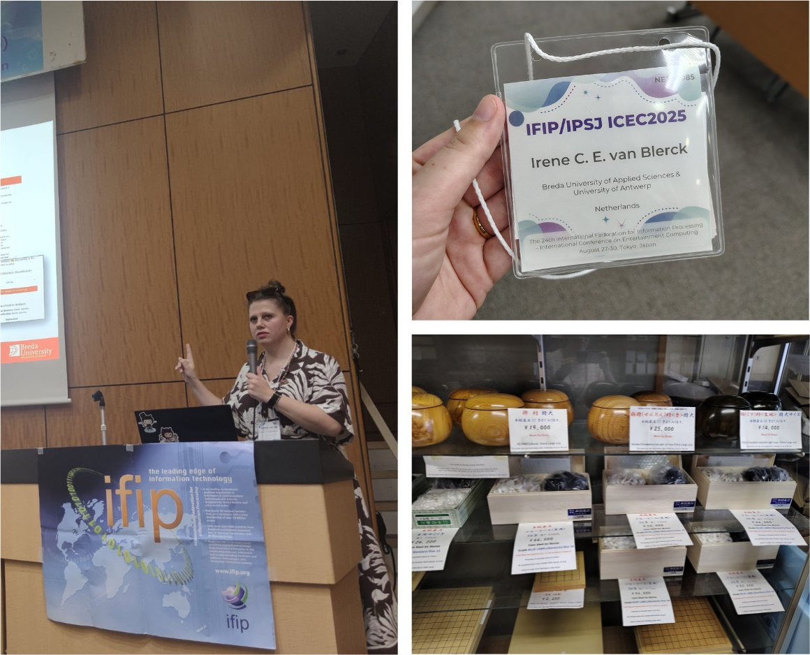

Back from Tokyo
Reflections on ICEC 2025 (Part 2 of 2)

In my first post, I shared some impressions from ICEC 2025 in Tokyo. This time, I want to tell a bit more about the presentations, conversations, and how the city itself became part of the experience. The conference was very well organized, and I feel grateful for the opportunity to present my work there.
My article presentation became the week's highlight, though it started with some doubts. During the workshop, I realized I was leaning too heavily on my slides, a bit of PowerPoint ‘karaoke’. After encouragement from my co-promoter Edirlei, I made the decision to present without my notes. For someone who wrestles with performance anxiety, this felt nerve wracking, yet it worked well. Speaking without notes made the presentation flow more naturally and allowed me to engage better with the audience.
The discussion afterward was just as important as the presentation itself. One participant asked whether our findings on gender bias in LLM narratives would hold across different cultures, a question highlighting a key limitation. Most models are developed in the Global North and trained on data reflecting its particular norms, creating potential blind spots for other cultural contexts. Another exchange ended with a question that continues to linger, can LLMs really reason. These moments remind me why it matters to present work in person.
The lectures I attended opened new perspectives. One demonstrated how games can make learning more engaging while reducing teacher workload. Another explored games for cultural heritage preservation, addressing familiar LLM challenges like hallucinations and computational demands. A presentation that stayed with me described an educational game for high school students in Peru, where the biggest obstacles were not design related but about infrastructure, with unreliable internet in rural areas and students using older laptops. It was a reminder that conditions we take for granted are far from universal.
Outside the conference halls, Tokyo was full of small discoveries. I visited a sushi place where you ordered from a screen that doubled as an entertainment hub, and plates of sushi arrived on a conveyor belt. I also picked up some traditional bowls and a small Go board, fitting souvenirs from a country where even AI systems like AlphaZero have made history with the game.
People were incredibly kind. Even when I lost my GPS signal in the maze of metro stations, strangers stopped to guide me, often without speaking any English. With their help, and with Google Maps leading me above ground, I always found my way.
The connections with fellow researchers were another highlight. I spent time with Andrea, a PhD candidate from Italy working on computer vision for wildlife conservation. We bonded quickly over research interests and the shared ups and downs of PhD life. One evening we wandered through Golden Gai in Shinjuku, a web of narrow post war alleyways where tiny bars once hosted writers and artists. Later we had dinner at a barbecue place where I tried premium beef, which I discovered is not really for me. Andrea spoke passionately about his work, and even more warmly about his wife and their daughter.
Looking back, ICEC was more than a conference. Learning happened in lecture halls, but also in conversations over food, late night walks, and moments of kindness from strangers. The PhD journey can feel lonely at times, yet Tokyo reminded me that research is part of a community that crosses borders, cultures, and dinner tables alike. I am already curious where the next conference will take me.